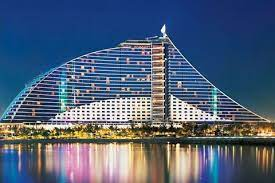
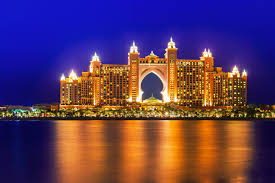
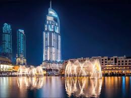

|  |
Jumeirah Beach HotelLe Jumeirah Beach Hotel se distingue par son architecture hors du commun. Construit en forme de vague geante. Cet hotel de luxe figure parmi les batiments les plus impressionnants de Dubai. Posé au bord d'une longue plage privée ,il est doté de chambres et suites modernes depuis lesquelles on profite d'une superbe vue sur la meret Burj Al Arab. |
Alantis,The PalmAlantis,The Palm est situe sur le palm de Jumeirah. Pour acceder au lopin de terre sur lequel se dresse l Atlantis , une route de 1Km passe sous la mer ce qui lui donne l'aspect d une ile vue du dessus. Cet hotel est un parc d'attraction a lui tout seul et merite amplement une visite. Il a une forme bien caracteristique et il est composé de deux tours : la tour Est et la tour Ouest. C'est un magnifique hotel,un hotel de conte de féees. |
 |
|  |
The Address DowntownPour un sejour inoubliable,l hotel The Address Downtown vous propose une piscine magnifique au 6eme etage en face de la Burj Khalifa , vue extraordinaire , literie de qualite et des chambres spacieuses. |